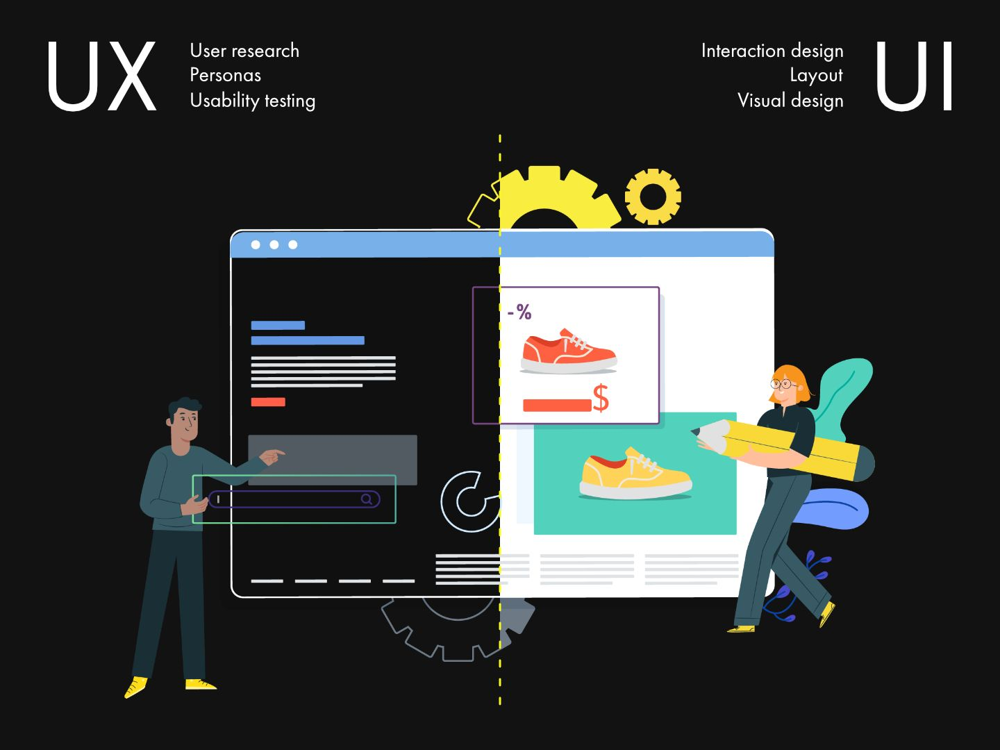

Введение
UX/UI-дизайн — это область, которая отвечает за удобство и визуальную привлекательность цифровых продуктов. UX (User Experience) — опыт пользователя, UI (User Interface) — пользовательский интерфейс.
UX-дизайнеры анализируют поведение пользователей и создают логику взаимодействия, а UI-дизайнеры придают продукту красивый и интуитивный внешний вид.
Эволюция UX/UI
Истоки UX-дизайна уходят к Дональду Норману, который ввёл термин "User Experience" в 90-х. С тех пор дизайн стал неотъемлемой частью цифровых продуктов.
UI прошёл путь от простых графических окон до сложных интерфейсов с анимацией, адаптацией и микровзаимодействиями.
- 1990-е — графические интерфейсы
- 2000-е — развитие веб-дизайна
- 2010-е — мобильный UX, flat-дизайн
- 2020-е — дизайн-системы и нейроинтерфейсы
UX-дизайн
UX-дизайн включает в себя исследование пользователей, построение пользовательских путей (user flows), прототипирование, тестирование и улучшение взаимодействия.
- Понимание потребностей пользователя
- Создание wireframes и прототипов
- Тестирование и аналитика
- Работа с UX-исследованиями
UI-дизайн
UI-дизайн фокусируется на эстетике: цветах, шрифтах, кнопках, отступах, сетках и визуальной иерархии. Цель — сделать интерфейс понятным и приятным.
- Создание дизайн-макетов (макеты в Figma, Sketch)
- Разработка дизайн-систем
- Подбор визуальных элементов
- Интерактивные прототипы
Инструменты UX/UI-дизайнера
- Figma — для дизайна и прототипирования
- Adobe XD — альтернатива Figma
- Maze, Hotjar — для UX-исследований
- Notion, Miro — для совместной работы
Курсы